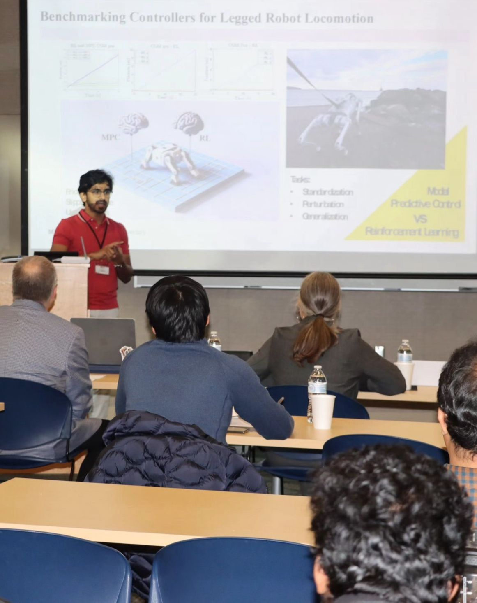
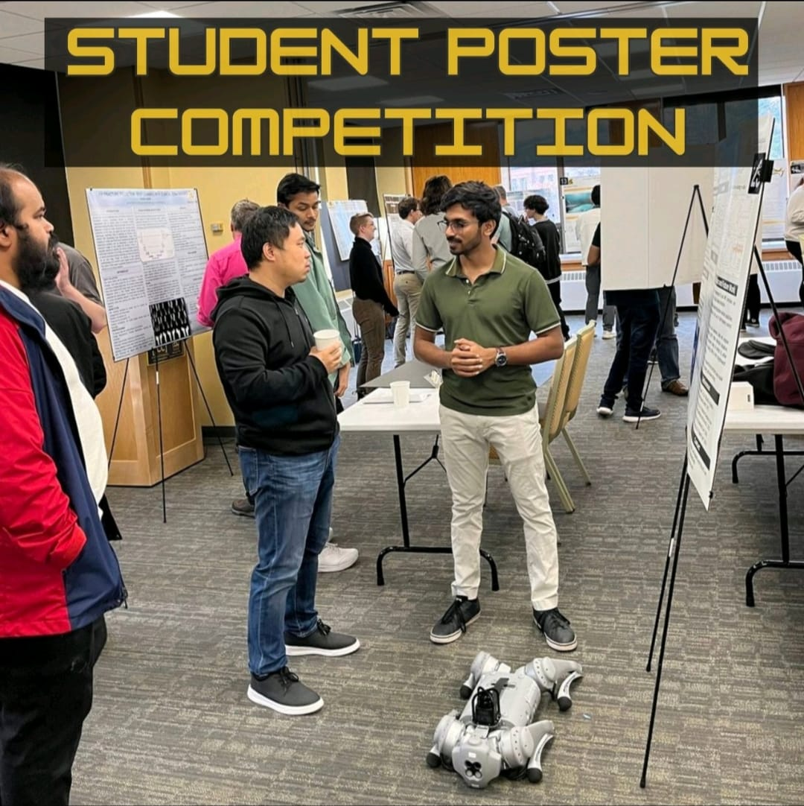
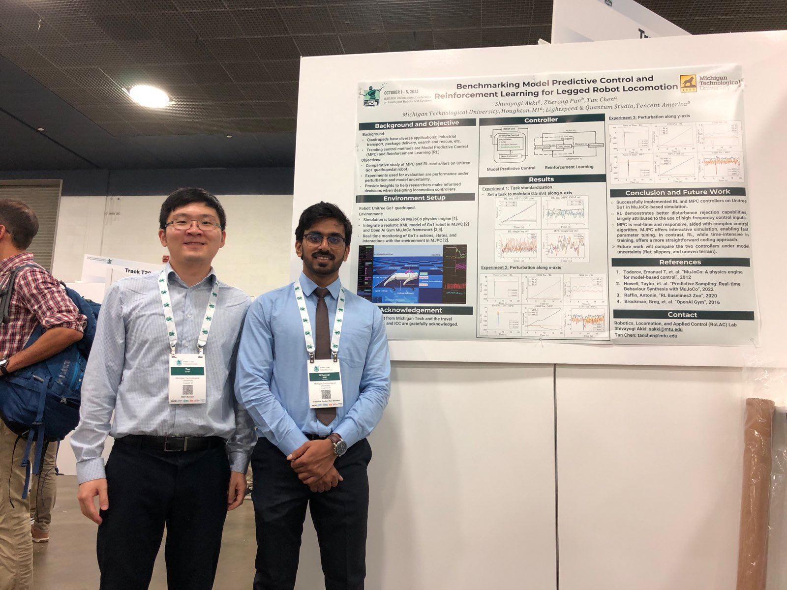
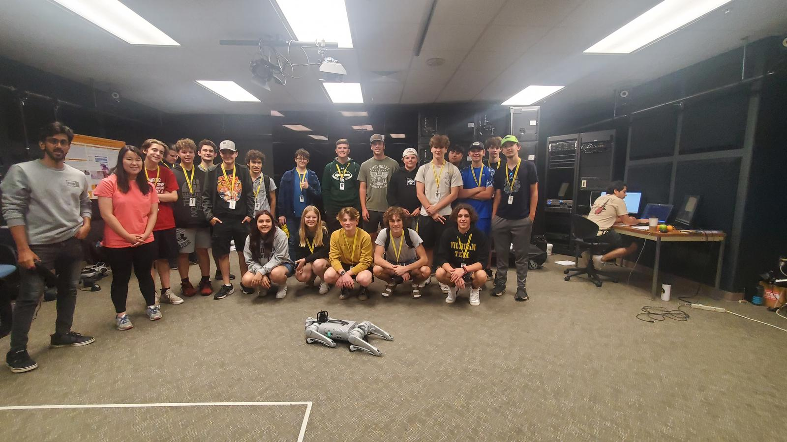

Biography (Long Version)
I am originally from Bengaluru, Karnataka, in southern India. I received my Bachelor's degree in Mechanical Engineering from Visveswaraya Technological
University, and later pursued my Master's degree in Mechatronics at Michigan Technological University, where I focused on advanced control systems and
robotics.
Currently, I am working toward my Ph.D. in Electrical Engineering at Michigan Technological University, specializing in legged robotics, reinforcement
learning, and control systems under the guidance of Dr. Tan Chen. My research includes developing
control algorithms for robotic locomotion in challenging environments, including NASA-sponsored projects like simulating human lunar locomotion. I have also contributed to
projects such as self-balancing robots and benchmarking control strategies for quadrupedal robots.
Beyond academics and research, I served as the Design Head for a year at the NSS social service organization "Yodha, the warrior within" during my Bachelor's.
During this time, we organized several events, including blood donation camps, awareness campaigns, and tree plantation drives. Additionally, I enjoy playing
basketball (I played for my undergraduate college team), chess, and listening to music. For a short period, I also worked as a freelance digital artist, which
allowed me to explore my creative side. I continue to share my passion for robotics through teaching, helping students gain hands-on experience with real-time
systems and control integration.
|
 |
 |
|
 |
 |